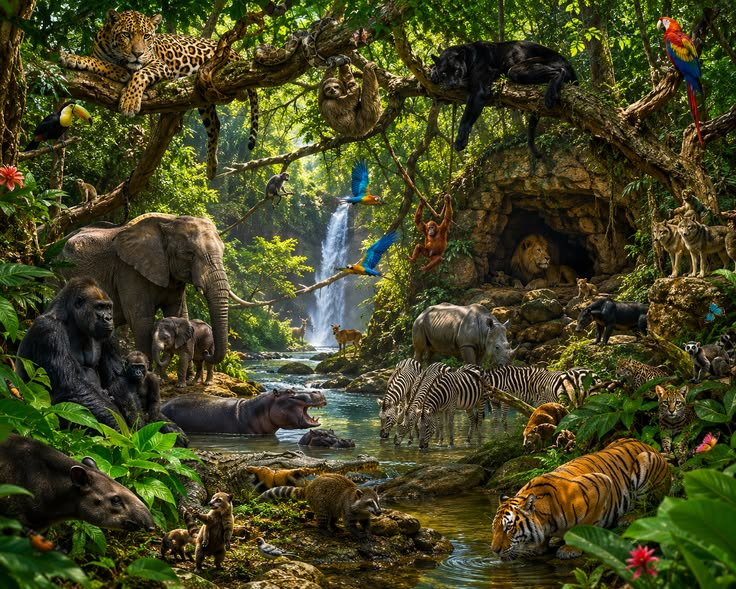
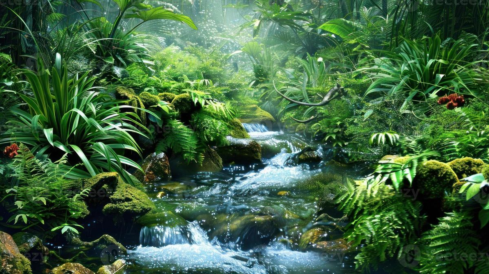
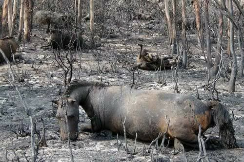

Informasi Penting
Ketika hutan menghilang, bukan hanya pepohonan yang hilang, tetapi juga kehidupan yang bergantung padanya

Hutan, Rumah bagi Kehidupan
Hutan merupakan ekosistem alami yang terdiri dari berbagai jenis tumbuhan, hewan, dan organisme yang saling berinteraksi.
Hutan menjadi tempat tinggal bagi beragam
spesies serta menyediakan sumber daya
penting bagi kehidupan manusia.
Namun, seiring berjalannya waktu, luas hutan
semakin berkurang akibat aktivitas manusia
dan berbagai perubahan lingkungan.
Hutan tropis memiliki keanekaragaman hayati yang sangat tinggi dan menjadi habitat bagi banyak spesies tumbuhan maupun hewan.

Hutan Menjaga Keseimbangan Bumi
Hutan memiliki peran penting dalam menjaga keseimbangan lingkungan. Keberadaannya memberikan manfaat bagi manusia dan berbagai makhluk hidup
Penghasil Oksigen
Tumbuhan menyerap karbon dioksida dan menghasilkan oksigen melalui proses fotosintesis.
Habitat Satwa
Menjadi tempat tinggal dan sumber makanan bagi berbagai jenis hewan.
Pengatur Siklus Air
Membantu menjaga siklus air, menyerap air hujan, dan mengurangi resiko erosi.
Pengendali Iklim
Menyimpan karbon dan membantu mengatur kondisi iklim bumi.

Ketika Hutan Mulai Menghilang
Deforestasi merupakan perubahan kawasan
hutan menjadi penggunaan lahan lain sehingga
tutupan hutan berkurang secara permanen.
Aktivitas pembukaan lahan, penebangan pohon,
kebakaran hutan, dan pembangunan dapat
menyebabkan kerusakan ekosistem.
Penebangan Hutan
Mengurangi jumlah pepohonan dan merusak habitat satwa.
Kebakaran Hutan
Menghancurkan vegetasi dan mengancam kehidupan satwa.
Alih Fungsi Lahan
Mengubah kawasan hutan menjadi area pertanian, perkebunan, atau pembangunan.